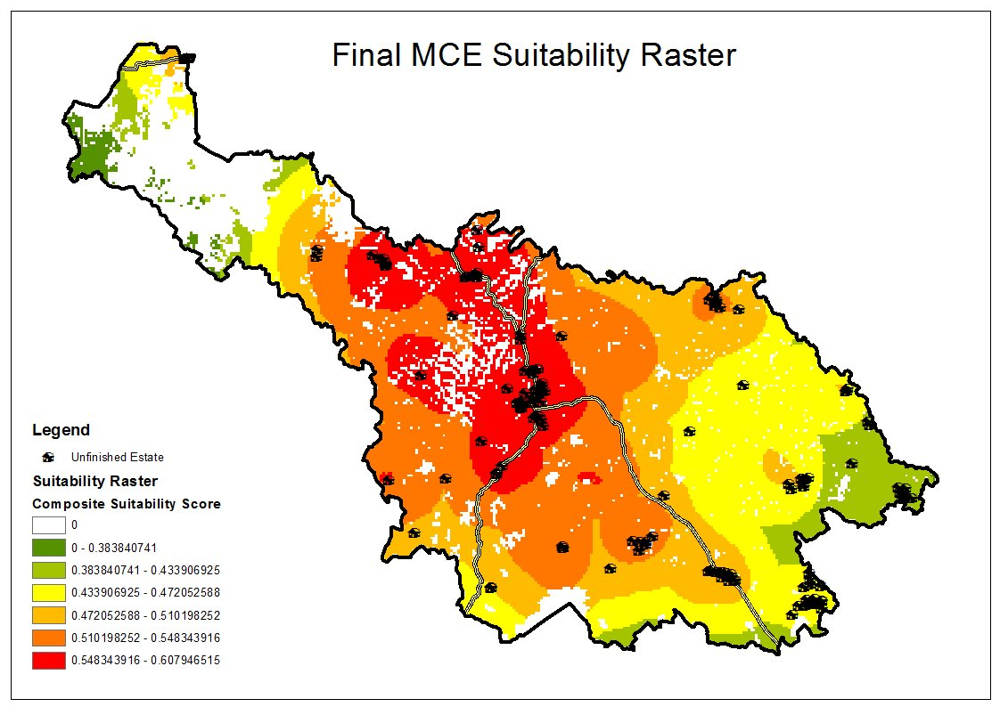

Social Housing Site Selection,
Co. Cavan
M.Sc. Dissertation
Multi-criteria evaluation suitability raster identifying optimal locations for social housing delivery across County Cavan, Ireland. Composite scores were derived from weighted spatial criteria including proximity to unfinished estates, infrastructure access, and land use constraints.
Tools: ArcGIS · Weighted Overlay · Raster Analysis